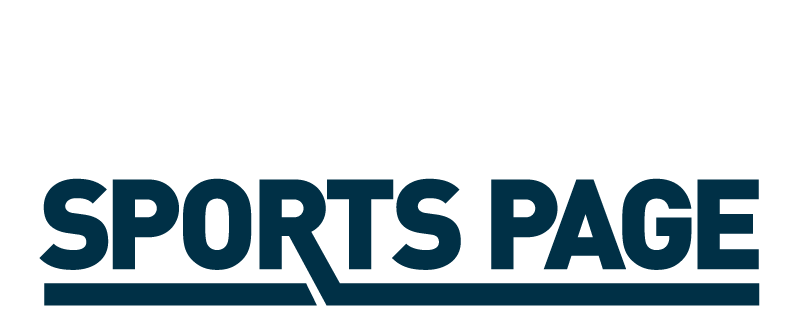

<!DOCTYPE html>
<html lang="en">
<head>
    <meta name="viewport" content="width=device-width, initial-scale=1">
    <meta charset="UTF-8">
    <title>Sylvester & Peck Media</title>
    <!-- <link rel="stylesheet" href="https://i.icomoon.io/public/temp/d7164769e0/UntitledProject/style.css"> -->
    <script src="https://use.fontawesome.com/825d01d0f3.js"></script>
    <script src="src/script.js"></script>
    <link href="https://fonts.googleapis.com/css?family=Roboto:100,300,400,400i,500,500i,900" rel="stylesheet">
    <link rel="stylesheet" href="style.css">
</head>
<body>

    <div id="wrapper">
<!-- HEADER -->
    <header>
      <div id="logo">
        <a href="index.html"></a>
      </div>
    </header>

<!-- END OF HEADER -->
<!-- NAVBAR -->

        <nav id="navbar">
            <ul>
                <li><a href="about.html" class="mobile">About</a></li>
                <li><a href="mediacoaching.html" class="mobile">Media Coaching</a></li>
                <li><a href="eventhosting.html" class="mobile">Event Hosting</a></li>
                <li><a href="corporateprograms.html" class="mobile">Corporate Programs</a></li>
                <li><a href="contact.html" class="mobile">Contact</a></li>
            </ul>
        </nav>

<!-- END OF NAVBAR -->
<!-- CONTENT -->

        <!-- Edit Page Here -->

        <div class="content">
              <div id="paulkevin"></div>
              <div class="text">
                  <h1>Sylvester & Peck, LLC</h1>
                  <p>Use our experience to your advantage…and navigate the ever-changing media world. With nearly 50 years of combined experience, Paul Peck & Kevin Sylvester have evolved and thrived in television, radio and all forms of media. Now, we can help you achieve and enhance your goals through one-one-one coaching, corporate group programs and event hosting.</p>
                  <div id="blurbs">
                  <div class="fullblurb">
                    <div class="fullblurbin">
                      <h2>Media Coaching</h2>
                        <p>Teaching the next generations of great broadcasters how to be successful <a href="mediacoaching.html"><i class="fa fa-arrow-right"></i></a></p>
                      <h2>Event Hosting</h2>
                        <p>Make sure your corporate event, outing or golf tournament is successful, entertaining and stays on schedule <a href="eventhosting.html"><i class="fa fa-arrow-right"></i></a></p>
                      <h2>Corporate Programs</h2>
                        <p>Paul and Kevin can help your business by serving as a keynote speaker, event host, or media trainer. <a href="corporateprograms.html"><i class="fa fa-arrow-right"></i></a></p>
                    </div>
                    <div class="fullblurbin" id="bspblurb">
                      <h2>Buffalo Sports Page</h2>
                      <p>Buffalo Sports Page is Western New York’s newest multimedia portal for sports opinions and analysis. Led by Kevin Sylvester and Paul Peck, along with a team of experienced media contributors, Buffalo Sports Page features videos, podcasts and stories covering all areas of Buffalo sports. Buffalo Sports Page Radio can be heard Saturday’s (10-12am) and Sundays (11am-1pm) on Buffalo’s Very Own <a href="http://timelessweck.com/">WECK</a>, 1230 AM & 102.9 FM.</p>
                      
                      <p id="blurblink">Visit <a href="https://buffalosportspage.com/" target="_blank">Buffalo Sports Page</a>!</p>
                      <p>
                    </div>
                  </div>
                  </div>
                </div>
        </div>

        <!-- Stop Edit Page Here -->

<!-- END OF CONTENT -->
<!-- FOOTER -->

        <footer>
          <div id="footercontent">
          </div>
        </footer>
<!-- END OF FOOTER -->
    </div>
    <script src="src/script.js"></script>
</body>
</html>
